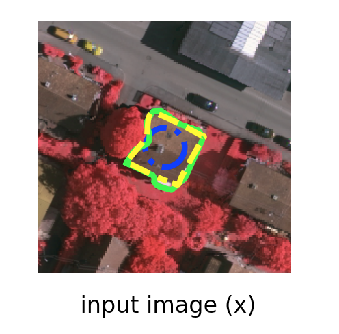

Details

Input Image
Image from the Vaihingen test set.
We can observe that the results of the predicted contour are promissing, the model can perform better with more data training, the value of Intersection over union in this test example is IoU = 0.63.
- The initial contour is in blue, this is a manually initialiation.
- The resulting contour is in yellow.
- The ground truth in green.